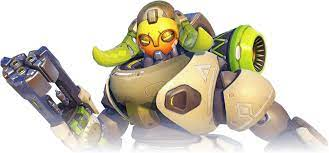
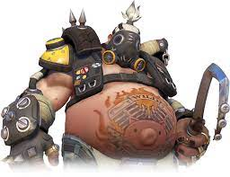
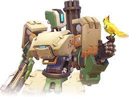
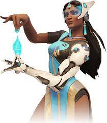
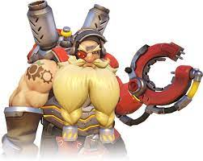
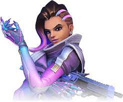
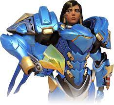
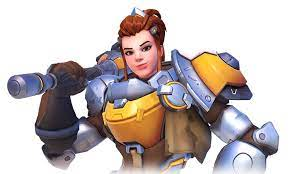

Para aqueles que não conhecem Overwatch por favor clique no link abaixo.
Os personagem que ja sofreram reworks no Overwatch forma:
|  | O rework que aconteceu na Orisa foi completo mudando todas as suas abilidades onde ela possuia um escudo portatil, um dispositivo eletromagnético usado para puxar os oponentes até o próprio dispositivo sua ultimate era uma maquina que almentava o dano causado e também aumenta o velocidade de disparo da equipe, agora ela perdeu todas essas abilidades e ganhou novas como por exemplo sua ultimate onde ela gira sua lança no céu e apos um tempo ou se o jogador escolher ela ataca causando uma certa quantidade de dano a oponentes em uma certa área, ela agora não tem mais um escudo pois ela gira sua lança em sua frwente anulando quase todo tipo de dano, e sua abilidade de juntar os inimigos com seu dispositivo eletromagnético se tranfomou em uma lança que ela taca em seus oponentes podendo empurar eles e ate mesmo cancelar algumas ações |
|  | O rework do Roadhog foi quase que completo alterando varias de suas abilidades como a sua cura que antes era uma skill(abilidade) que se ativava instantaneamnete após se clicar nela, agora é necessário segurar o botão dela para que aconteça, o seu disparo também foi alterado onde unificaram o disparo primário com o secundário e por ultimo adicionaram uma nova abilidade de plantar uma armadinha de choque em uma parte do mapa onde ela só pode ser ativada se algum inimigo pisar nela. |
|  | O nosso robo de guerra Bastion teve um rework dos grandes começando pelas suas abilidades, onde ele pode virar uma minigun que tinha um escudo protetor alem de ser imovel e ter uma quantidade absurda de munições ele poderia ficar o tempo que quisesse nesta forma semdo apenas limitado a vontade do jogador ou se ele morrer, para o auxilio próprio Bastion tinha uma abilidade de auto-reparo, e na sua ultimate ele virava um canhão de guerra ambulante que disparava misseis, ja atualmente o modo minigun perdeu o escudo, passou a ser movel com munição infinita, porém possuindo um tempo limite nessa forma o auto-reparo foi substituido por uma granada grudante e a ultimate passou a ser um novo modo onde o jogador selecia 3 pequenas areas do mapa e lança um bombardeio sobre elas. |
|  | A Symmetra tem um histórico bem longo de reworks onde eles começaram com seus rbos sentinelas que são uma especie de robo que fica fixo em qualquer parede teto ou chão onde antigamente ela poderia instalar até 5 desses sentinelas, agora esse numero foi diminuido para 3 a abilidade continua a mesma em todos os outros aspéctos, sua ultimate que antigamente era um teletranportador passou a ser uma abilidade normal do personagen e sua ultimate passou a ser um "escudo" que divide o mapa onde os tiros inimigos não o ultrapassam, já os de seus aliados coonsenguem atravesa-lo. |
|  | Já o rework do Torbjörn foi focado em sua torreta onde ela tinha 3 niveis que para serem alcancados o jogador deveria ficar martelando ela, já atualmente a torreda vem de modo padrão no nivel 2 e o martelo passou a concertar a torreta ao inves de a elevar de nivel. |
|  | O rework da Sombra foi mais focado em deixar ela menos roubada mechendo bastande nas abilidades já presentes nela onde alteraram sua invisibilidade onde agora ela é uma abilidade passiva, o teletranporte passou a ser ativado automaticamente após ser arremessado para alguma direção, ela ganhor uma nova abilidade onde ela lança um "virus computacional" em um oponete que causa 100 de dano. |
|  | O rework da Pharah foi bem focado em sua capacidade de se mover no ar onde adicionaram uma abilidade que a imppulciona para alguma direção em que ela estiver se movendo e almentando o seu combústivel para ela se manter mais tempo no ar. |
|  | E o rework da Brigitte foi emm sua abilidade suprema que passou de uma area de vida extra ao aliados e passou a ser um escudo que paraliza seus oponentes caso os acerte continua a dar vida extra a equipe aliada. |